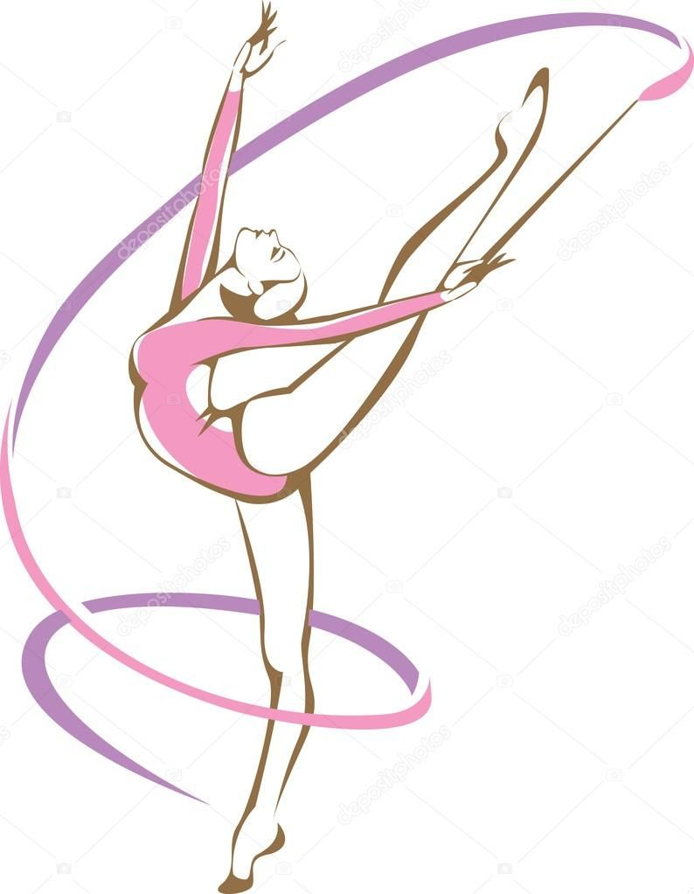

Художня Гімнастика

Художня гімнастика — це складно-координаційний вид спорту,
під музичний супровід, що виконує одна гімнастка, або команда із п'яти дівчат
з кількома предметами по черзі: м'ячем, скакалками, булавою, обручем і стрічками.
Художня гімнастика є олімпійським видом спорту.
Останнім часом виступи без предмету не проводяться на змаганнях світового класу.
При групових виступах використовуються один, два види предметів одночасно
(обручі і м'ячі) або декiлька предметiв одного виду (п'ять м'ячів, п'ять пар булав).
Переможці визначаються в багатоборстві, в окремих видах і групових вправах.
Всі вправи йдуть під музичний супровід.
Раніше виступали під фортепіано або один інструмент.
Тепер використовуються оркестрові фонограми.
Вибір музики залежить від бажань гімнастки і тренера.
Але кожна вправа повинна тривати не більше півтори хвилини.
Змагання проходять на гімнастичному килимі розміром 13х13 метрів.
Класичне багатоборство (4 вправи) — олімпійська дисципліна.
Окрім багатоборства, гімнастки, що виступають в індивідуальній першості,
традиційно розігрують комплекти нагород в окремих видах вправ.
Виступи оцінюються за двадцятибальною системою.
Один з найбільш видовищних і витончених видів спорту.
З 1984 року — олімпійський вид спорту.
 Першою олімпійською чемпіонкою з художньої гімнастики стала канадка Лорі Фанг, вигравши багатоборство на
Першою олімпійською чемпіонкою з художньої гімнастики стала канадка Лорі Фанг, вигравши багатоборство на
Олімпійських іграх у 1984 у Лос-Анджелес.
Першою чемпіонкою України у 1948 р. стала Лідія Сільченко (Київ) . У 1949 році вона знову підтвердила своє звання . За нею спортивних виcот сягли уславлена Олена Бірюк , Рита Кульпінська , Валентина Волошина . Українські гімнастки успішно боролися за призові місця з найсильнішими гімнастками союзних республік.
Українські гімнастки — одні з лідерів світової гімнастики. Головними тренерами збірною протягом багатьох років є Ірина та Альбіна Дерюгіни. Вони заснували всесвітньо відому «Школу Дерюгіних», відому титулованими ученицями, серед них Ганна Безсонова (багаторазова чемпіонка світу, дворазовий бронзовий призер Олімпійських ігор).
Україна має двох олімпійських чемпіонок — Катерину Серебрянську та Олександру Тимошенко, бронзових призерок Ганну Безсонову (двічі), Олену Вітриченко,Оксану Скалдіну та Ганну Різатдінову.
Чемпіонкою світу як в особистій першості (2001), так в і груповій першості (2002) була Наталія Годунко. Чемпіонкою світу 2001 року в індивідуальному баготоборстві стала Тамара Єрофеєва.
Першим номером збірної України у 2010—2013 рр. була Аліна Максименко, багаторазова призерка чемпіонатів Європи та світу.
Щорічно в Києві проходять міжнародні змагання — Кубок Дерюгіної.
ДЯКУЮ ЗА УВАГУ!